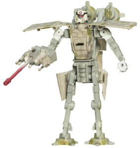

As is par for the course
for the SWTF line, the AT-AT mode is pretty close to flawless, ignoring
the telltale "cracks" along the figure here and there that are necessary
on any Transformer toy. Proportionally, the "head" may be a TAD oversized,
but it's still close enough for that to be questionable. The detailing
on the figure is incredible, with every necessary detail on the AT-AT there.
And, although he doesn't have a whole lot of "normal" paint apps in this
mode per se, he's got a GREAT paint wash across his entire upper body,
which really helps make him look worn and battle-hardened. This works especially
well on the tan parts. As can probably be ascertained from the above pictures,
his front gun fires a standard spring-loaded missile, which is triggered
by a button on the underside of the head. Like other SWTFs, the figure
also comes with miniature AT-AT driver figure which fits comfortably inside
the cockpit inside the head. The color scheme is pretty dull, though is
to be expected since that's pretty much par for the course as far as the
color schemes went in the movie. There's no Mech mode extras visible at
all in this mode-- even on the underside-- which is a huge plus, and the
AT-AT can move back-and-forth at the hips and knees of all four legs, as
well rotate at each ankle and at the base of the head.
The AT-AT driver's Mech
mode isn't as good as his vehicle mode, but it's still above-average for
a SWTF. Making the shoulder panels out of the sides of the AT-AT was a
pretty creative move, and the AT-AT head folds into the chest rather seemlessly.
Two other panels that make up the surface of the AT-AT mode form a sort
of mecha-samurai "skirt" around the hips, which looks pretty darned cool.
The legs themselves look pretty dorky, though, as they're just made from
two of the two AT-AT legs, which look way too two-dimensional in this mode
and out-of-place. The arms are also a little puny. The head sculpt is very
well-done, however-- it looks just like an AT-AT pilot, but since an AT-AT
pilot's head is already robotic-looking, it fits well here. Normally, having
two of the AT-AT legs hanging off the back like they do on this figure
would bother me, as they'd just be big pieces of useless kibble, but the
toes of those feet fold down, making them look sort of like "jet pack thrusters",
which is a pretty creative use for them. There are several panels folded
behind the Mech mode that are unabashedly just kibble, though, and don't
lock into anything of contribute anything to the mode, which is definitely
my biggest complaint about the figure. Still, at least they don't get in
the way of articulation, unlike on some other SWTFs. Speaking of articulation,
the toy can move side-to-side at the head, has the aforementioned articulation
in his AT-AT feet, and cam move at the shoulders (at three points), elbows
(at two points), and the wrists. (He also technically has waist rotation,
but he all that kibble on his back sort prevents him from moving much in
that respect unless you're transforming him.) As for the AT-AT Driver's
weapon, the lower part of the AT-AT head becomes a handheld missile launcher
in this mode.
AT-AT Driver has his
problems-- such as some rather obvious kibble in Mech mode and a few proportional
problems-- but he's definitely above-average for a SWTF, with an extremely
solid vehicle mode and a pretty decent Mech mode, as well. Mildly recommended.
Review by Beastbot
*(NOTE: The AT-AT Driver was also re-released as "Imperial Trooper"
in the SWTF Crossovers lins about a year later. The changes, as can be
seen from the Mech Mode picture below, are minor-- a new head mold was
used, and a few green worn spots added, but other than that the figure
is the same. I think the new head looks rather doofy, to be honest, though
the green "worn" sports look pretty cool. Also, like other figures in the
Clone Wars-packaged "Crossovers" part of the line, no miniature pilot figure
was included.)
